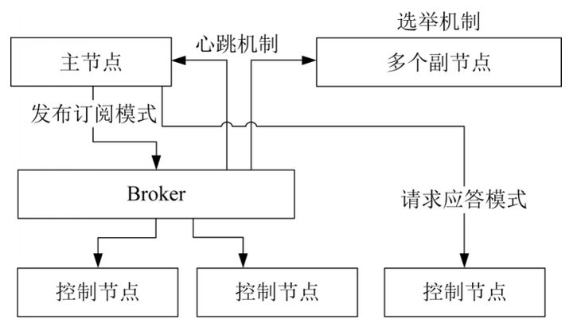
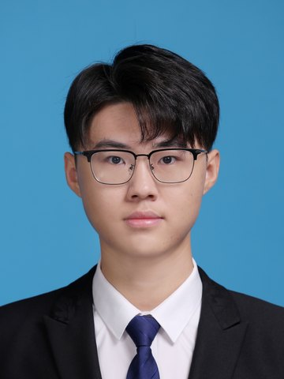
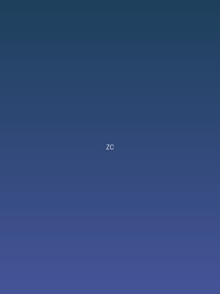
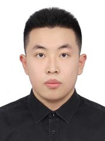

Sensing the invisible through 感知不可见 · electromagnetic side channels
Mobile Intelligent Networks and Systems Lab · School of Computer Science · Shanghai Jiao Tong University. From the physics of signal leakage to deployable, intelligent sensing systems.上海交通大学计算机学院 · Mobile Intelligent Networks and Systems Lab。从信号泄漏的物理机理出发，构建可落地的智能感知系统。
I am an Associate Researcher and Ph.D. Supervisor at Shanghai Jiao Tong University (SJTU), working closely with Professor Guangtao Xue. My research is conducted within the Shanghai Key Laboratory of Web3 Trusted Data Circulation and Governance, and I am pleased to contribute as a member of the CCF Internet of Things Special Committee.
My research interests lie at the intersection of the Internet of Things (IoT), Intelligent Sensing, and Large Language Models (LLMs). I am driven by the goal of bridging the gap between physical sensing and intelligent cognitive understanding to create more intuitive and secure systems. Recent topics include electromagnetic and acoustic side channels, RF radiance-field modeling with 3D Gaussian Splatting, and multimodal LLMs for hardware design.
我的研究兴趣位于物联网（IoT）、智能感知与大语言模型（LLM）的交叉点，致力于弥合物理感知与智能认知之间的鸿沟，构建更直观、更安全的系统。近期课题包括电磁与声学侧信道、基于 3D 高斯泼溅的射频辐射场建模，以及面向硬件设计的多模态大模型。
I feel fortunate to work alongside a team of exceptionally talented colleagues and students whose insights constantly inspire my work. Through these collaborative efforts, I have had the opportunity to share our findings in venues such as USENIX Security, NSDI, ACM MobiCom, ICML, ACM IMWUT/UbiComp, IEEE INFOCOM, and IEEE TMC. I was also deeply honored to receive the 2025 Shanghai Computer Society Science and Technology Award (First Prize). Together, our students also built 巫萌 (MagicGenesis), the group's own AI-agent research platform.
I am always looking for self-motivated Ph.D. students, M.S. students, and undergraduate research interns who are excited about mobile and IoT sensing, electromagnetic and acoustic side channels, RF digital twins, or LLMs for physical systems. If you are interested, please email me your CV and transcripts.
巫萌 brings students, faculty and AI agents together on shared research projects — from literature search and experiments to paper writing. Reusable skills and project boards keep every step traceable, so what one person learns is passed on instead of lost.
巫萌让同学、老师和 AI 智能体在同一个课题里协同推进——从文献检索、实验到论文写作。可复用的技能（skill）和课题看板让每一步都有迹可循，一个人摸索出的经验能沉淀下来，传给后来的同学。
AI agents for research科研智能体Reusable skills可复用技能Shared project boards课题看板
Designed, built and maintained by the students of our group — it is the fruit of everyone's hard work.平台由课题组同学自主设计、开发和运维，凝聚了每一位同学的心血。
I now serve as a Ph.D. supervisor at SJTU. Welcome Longyuan Ge (Ph.D.) and M.S. students Zhuxi Chen and Md Azizur Rahman Jamim (Jack) to my advising group, and Jiayi Ma, who will join as a Ph.D. student in Fall 2027!我已担任上海交通大学博士生导师。欢迎葛龙渊（博士生）以及硕士生陈柱西、Md Azizur Rahman Jamim（Jack）加入我指导的课题组，也欢迎马佳一 2027 年秋季入学攻读博士！Group课题组
2026
New projects as PI: Ultrasound-based Anti-Eavesdropping System Technology with Huawei (¥927K), and a multimodal intelligent assessment system for TCM musculoskeletal imbalance with Ruijin Hospital (¥200K).新主持两项合作项目：华为“基于超声波的防窃听系统技术”（92.7 万元），以及瑞金医院“中医筋骨失衡多模态智能评估两端应用系统建设项目”（20 万元）。Grant项目
ICLAgent appears at ECCV 2026 in Malmö. Congratulations to Yida and Yixin!ICLAgent 发表于 ECCV 2026（瑞典马尔默）。祝贺作者团队，也祝贺怡昕！CCF-B
2026/09
MagGuard is published in IEEE TMC. Congratulations to Hao and Yongjian!MagGuard 发表于 IEEE TMC。祝贺潘昊和作者团队！CCF-A
2026/05
Our paper SingSprite, which lets blind users interact with home appliances through power-supply acoustic signatures, appears at ACM/IEEE SenSys 2026.论文 SingSprite 发表于 ACM/IEEE SenSys 2026：借助电源的声学特征，让视障用户与家电交互。CCF-B
2026/05
New preprints: ClawGuard detects LLM-agent workflow hijacking through the EM side channel (congratulations to Linqian!), and LPH-VTON tackles structure-texture fidelity in virtual try-on (congratulations to Yixin!).新预印本：ClawGuard 通过电磁侧信道检测大模型智能体的工作流劫持（祝贺林千！）；LPH-VTON 破解虚拟试衣中的结构–纹理两难（祝贺怡昕！）。arXiv预印本
2026/05
Honored to be recognized as a Gold Reviewer for ICML 2026 (top 10%).荣获 ICML 2026 金牌审稿人（前 10%）。Award荣誉
2026/05
Our paper LMM4-IC4K has been accepted by ICML 2026. Congratulations to Yida, Chenzhe, and Yixin!论文 LMM4-IC4K 被 ICML 2026 录用。祝贺作者团队，也祝贺怡昕！CCF-A
2026/04
Honored to receive the First Prize of the 2025 Shanghai Computer Society Science and Technology Award.荣获2025 年度上海市计算机学会科学技术奖一等奖。Award荣誉
2026/04
Weiyi's paper submitted to ACM IMWUT (UbiComp) received a 'Major Revision' decision.投稿 ACM IMWUT (UbiComp) 的车内手势交互论文获得“大修”意见。CCF-A
Successfully completed the Huawei Collaboration Project on AP electromagnetic sensing security.顺利完成华为合作项目“AP 电磁感知安全能力构建”。Industry产业
2026/01
MagPrint++ published in IEEE Transactions on Mobile Computing.MagPrint++ 发表于 IEEE Transactions on Mobile Computing。CCF-A
2025/10
Paper NLCTCN accepted by IEEE BIBM. Congratulations to Zechen and Yiheng!论文 NLCTCN 被 IEEE BIBM 录用。祝贺作者团队！CCF-B
2025/09
Paper MagPrint++ accepted by IEEE TMC.论文 MagPrint++ 被 IEEE TMC 录用。CCF-A
2025/09
Paper SingSprite accepted by ACM/IEEE SenSys 2026.论文 SingSprite 被 ACM/IEEE SenSys 2026 录用。CCF-B
2025/09
Deployed the industry's first Anti-Surveillance Detection System with Huawei Data Communications (99% accuracy).与华为数据通信产品线合作，部署业界首个防偷拍检测系统（准确率 99%）。Industry产业
Paper MagSpy accepted by IEEE TMC. Congratulations to Yongjian!论文 MagSpy 被 IEEE TMC 录用。祝贺作者团队！CCF-A
04
Research
研究方向
Six connected threads, from how signals physically leak to how machines understand them.
六条相互关联的研究主线：从信号如何在物理上泄漏，到机器如何理解它们。
Core motivation核心动机
Most sensing systems work in the lab but fail in the "wild." My goal is to sense the unreachable and the invisible. Whether it is an ultra-weak signal under the ocean, a hidden device in a secure room, or a fragmented data pattern in a power grid—I focus on the physics of the bottom layer to build systems that are robust, deployable, and industrially meaningful.
RF Radiance Fields & Physical Digital Twins射频辐射场与物理数字孪生
Modeling物理建模
Physics底层机理Sparse RF measurements → propagation physics (LoS, reflection, scattering, diffraction) → 3D scene representation.稀疏射频测量 → 传播物理（视距、反射、散射、衍射）→ 三维场景表示。
Approach关键技术3D Gaussian Splatting with physics-guided propagation experts; data-efficient reconstruction from everyday human movement.结合物理引导传播专家的 3D 高斯泼溅；借助日常人体运动实现数据高效的场景重建。
Physics底层机理Power-supply high-frequency noise → component signatures; ultrasound and the nonlinearity of air and microphones.电源高频噪声 → 元器件特征；超声以及空气与麦克风的非线性。
Approach关键技术Acoustic-to-semantic mapping → covert attack / defense and accessible interaction; ultrasonic anti-eavesdropping and steerable sound zones.声学到语义的映射 → 隐蔽攻击/防御与无障碍交互；超声防窃听与可调声区。
Physics底层机理Raw signal data → low-level features → high-level semantics.原始信号 → 低层特征 → 高层语义。
Approach关键技术LLM-powered signal interpretation & multi-agent optimization; dynamic model routing and streaming inference acceleration; industrial NL2SQL for sensor databases.大模型驱动的信号理解与多智能体优化；动态模型路由与流式推理加速；面向传感器数据库的工业级 NL2SQL。
Physics底层机理Body signals (sEMG, EEG, motion) and clinical images → physiological and pathological states.人体信号（肌电、脑电、运动）与临床影像 → 生理与病理状态。
Approach关键技术Multimodal (sEMG + vision) assessment of musculoskeletal imbalance with Ruijin Hospital; EEG spatiotemporal modeling; AI for multi-source clinical data.与瑞金医院合作，融合肌电与视觉评估筋骨失衡；脑电时空建模；面向多源临床数据的 AI。
Shows that the audible noise of switching power supplies can be driven remotely through the power line to inject commands into speech recognition systems.
@inproceedings{wang2026lmm4,
title = {{LMM4-IC4K: A Large Multimodal Model Powered Integrated Circuit Footprint Geometry Understanding}},
author = {Yida Wang and Taiting Lu and Runze Liu and Lanqing Yang and Zhe Chen and Yuehai Wang and Yixin Liu and Kaiyuan Lin and Xiaomeng Chen and Dian Ding and Yijie Li and Yifan Yang and Yi-Chao Chen and Yincheng Jin and Mahanth Gowda},
booktitle = {Proceedings of the 43rd International Conference on Machine Learning (ICML)},
year = {2026}
}
Cross-Band RF Radiance Field Modeling via 3D Gaussian Splatting and Propagation Mixture-of-Experts
@inproceedings{li2026cross,
title = {{Cross-Band RF Radiance Field Modeling via 3D Gaussian Splatting and Propagation Mixture-of-Experts}},
author = {Zechen Li and Hao Pan and Yu Lu and Yiheng Bian and Yongjian Fu and Yezhou Wang and Lanqing Yang and Guangtao Xue},
booktitle = {Proceedings of the 32nd Annual International Conference on Mobile Computing and Networking (MobiCom)},
year = {2026},
pages = {668--689},
doi = {10.1145/3795866.3844449}
}
@inproceedings{zhou2026polarix,
title = {{Polarix: Monitoring Multi-Component Liquids via Polarized Light}},
author = {Juntao Zhou and Longyuan Ge and Yi-Chao Chen and Qianfei Ren and Yijie Li and Dian Ding and Yida Wang and Hao Pan and Lili Qiu and Jiadi Yu and Lanqing Yang and Guangtao Xue},
booktitle = {Proceedings of the 32nd Annual International Conference on Mobile Computing and Networking (MobiCom)},
year = {2026},
pages = {1123--1138},
doi = {10.1145/3795866.3844475}
}
Eyes-Free, Touch-Free, and Worry-Free: Repurposing Wireless Chargers for Safer In-Car Gesture Interaction
@article{wang2026eyes,
title = {{Eyes-Free, Touch-Free, and Worry-Free: Repurposing Wireless Chargers for Safer In-Car Gesture Interaction}},
author = {Weiyi Wang and Lanqing Yang and Guo Yu and Qinfei Fan and Jeffery Wu and Longyuan Ge and Leo Linqian Gan and Guangtao Xue},
journal = {Proceedings of the ACM on Interactive, Mobile, Wearable and Ubiquitous Technologies},
year = {2026},
volume = {10},
number = {3},
doi = {10.1145/3831984}
}
@article{pan2026magguard,
title = {{MagGuard: Detecting Mobile Eavesdropping via Built-in Magnetometers with Contrastive Learning}},
author = {Hao Pan and Lanqing Yang and Yongjian Fu and Yi-Chao Chen and Guangtao Xue and Ju Ren},
journal = {IEEE Transactions on Mobile Computing},
year = {2026},
volume = {25},
number = {9},
pages = {15234--15250},
doi = {10.1109/TMC.2026.3697471}
}
@article{yang2026magprint,
title = {{MagPrint++: Continuous User Fingerprinting on Mobile Devices Using Electromagnetic Signals}},
author = {Lanqing Yang and Xinqi Chen and Hao Pan and Yi-Chao Chen and Guangtao Xue and Zechen Li and Yiheng Bian and Dian Ding and Linghe Kong and Jiadi Yu and Feng Lyu and Minglu Li and Ziyu Shen and Bo Zhang},
journal = {IEEE Transactions on Mobile Computing},
year = {2026},
volume = {25},
number = {3},
pages = {3215--3228},
doi = {10.1109/TMC.2025.3616308}
}
SingSprite: Non-Tactile Appliance Interaction for the Blind through Power-Supply Acoustic Signatures
@inproceedings{yang2026singsprite,
title = {{SingSprite: Non-Tactile Appliance Interaction for the Blind through Power-Supply Acoustic Signatures}},
author = {Lanqing Yang and Weiyi Wang and Yongzhao Zhang and Yixin Liu and Yi-Chao Chen and Guangtao Xue and Ahmad Ali},
booktitle = {Proceedings of the 2026 ACM/IEEE International Conference on Embedded Artificial Intelligence and Sensing Systems (SenSys)},
year = {2026},
pages = {933--946},
doi = {10.1145/3774906.3800505}
}
@inproceedings{wang2026iclagent,
title = {{ICLAgent: Integrated Circuit Footprint Geometry Labeling via LMM-Empowered Multi-Agent Framework}},
author = {Yida Wang and Yixin Liu and Taiting Lu and Lanqing Yang and Dian Ding and Juntao Zhou and Yifan Yang and Yi-Chao Chen and Mahanth Gowda},
booktitle = {Computer Vision -- ECCV 2026},
year = {2026},
pages = {568--587},
publisher = {Springer},
doi = {10.1007/978-3-032-37255-0_31}
}
@article{ali2026exploiting,
title = {{Exploiting Attention-Driven Weather-Aware Multimodal Spatio-Temporal Fusion for Urban Traffic Flow Prediction}},
author = {Ahmad Ali and Riaz Ali and Mujtaba Asad and Lanqing Yang and Tamam Alsarhan and Xiaoshan Bai},
journal = {Future Generation Computer Systems},
year = {2026},
volume = {183},
pages = {108559},
doi = {10.1016/j.future.2026.108559}
}
@article{dong2026enabling,
title = {{Enabling Spaceborne Ocean Remote Sensing: An Acoustic CSI-based Crowdsourced Salinity Sensing Technology}},
author = {Runyang Dong and Haifeng Liu and Guangtao Xue and Qian Chen and Lanqing Yang and Rong Ma},
journal = {Aerospace Shanghai (Chinese \& English)},
year = {2026},
volume = {43},
number = {1},
pages = {42--53, 62},
doi = {10.19328/j.cnki.2096-8655.2026.01.004}
}
@article{gan2026clawguard,
title = {{ClawGuard: Out-of-Band Detection of LLM Agent Workflow Hijacking via EM Side Channel}},
author = {Leo Linqian Gan and Jeffery Wu and Longyuan Ge and Lanqing Yang and Yonghao Song and Jingkai Zhang and Haojia Jin and Weiyi Wang and Guangtao Xue},
journal = {arXiv preprint arXiv:2605.06205},
year = {2026}
}
@article{liu2026lph,
title = {{LPH-VTON: Resolving the Structure-Texture Dilemma of Virtual Try-On via Latent Process Handover}},
author = {Yixin Liu and Baihong Qian and Jinglin Jiang and Jeffery Wu and Yan Chen and Wei Wang and Yida Wang and Lanqing Yang and Guangtao Xue},
journal = {arXiv preprint arXiv:2605.14874},
year = {2026}
}
@inproceedings{zhang2025nlctcn,
title = {{NLCTCN: A Non-Local Temporal Convolutional Framework for Spatiotemporal Modeling in Multichannel EEG}},
author = {Han Zhang and Lanqing Yang and Zechen Li and Leping Yang and Yiheng Bian and Dian Ding and Leyu Jiang and Yi-Chao Chen and Guangtao Xue},
booktitle = {2025 IEEE International Conference on Bioinformatics and Biomedicine (BIBM)},
year = {2025},
pages = {3260--3265},
doi = {10.1109/BIBM66473.2025.11356971}
}
@article{lu2025amser,
title = {{Amser+: Accelerating Mobile Speech Emotion Recognition in IoT Environments With Mel Feature Compression}},
author = {Yu Lu and Ran Wang and Dian Ding and Yijie Li and Yongzhao Zhang and Lanqing Yang and Yi-Chao Chen and Guangtao Xue},
journal = {IEEE Internet of Things Journal},
year = {2025},
volume = {12},
number = {16},
pages = {32875--32888},
doi = {10.1109/JIOT.2025.3576016}
}
@article{fu2025magspy,
title = {{MagSpy: Revealing User Privacy Leakage via Magnetometer on Mobile Devices}},
author = {Yongjian Fu and Lanqing Yang and Hao Pan and Yi-Chao Chen and Guangtao Xue and Ju Ren},
journal = {IEEE Transactions on Mobile Computing},
year = {2025},
volume = {24},
number = {3},
pages = {2455--2469},
doi = {10.1109/TMC.2024.3495506}
}
@inproceedings{lu2025amser,
title = {{AMSER: Accelerate Mobile Speech Emotion Recognition with Signal Compression}},
author = {Yu Lu and Ran Wang and Dian Ding and Han Zhang and Liyun Zhang and Lanqing Yang and Yi-Chao Chen and Guangtao Xue},
booktitle = {IEEE International Conference on Acoustics, Speech and Signal Processing (ICASSP)},
year = {2025},
doi = {10.1109/ICASSP49660.2025.10890314}
}

Research on Distributed Control Technology Based on Narrowband Internet of Things基于窄带物联网的分布式控制技术研究
Yiheng Chen, Long Zhang, Qingsong Zhao, Lanqing Yang, Guangtao Xue.陈以恒，张龙，赵青松，杨岚青，薛广涛
Air & Space Defense, 8(2): 142–152, 2025空天防御，2025，8(2)：142–152Journal期刊
@article{chen2025research,
title = {{Research on Distributed Control Technology Based on Narrowband Internet of Things}},
author = {Yiheng Chen and Long Zhang and Qingsong Zhao and Lanqing Yang and Guangtao Xue},
journal = {Air \& Space Defense},
year = {2025},
volume = {8},
number = {2},
pages = {142--152}
}
@article{bian2025one,
title = {{One Walk is All You Need: Data-Efficient 3D RF Scene Reconstruction with Human Movements}},
author = {Yiheng Bian and Zechen Li and Lanqing Yang and Hao Pan and Yezhou Wang and Longyuan Ge and Jeffery Wu and Ruiheng Liu and Yongjian Fu and Yi-Chao Chen and Guangtao Xue},
journal = {arXiv preprint arXiv:2511.16966},
year = {2025}
}
@article{wang2025wireless,
title = {{The Wireless Charger as a Gesture Sensor: A Novel Approach to Ubiquitous Interaction}},
author = {Weiyi Wang and Lanqing Yang and Linqian Gan and Guangtao Xue},
journal = {arXiv preprint arXiv:2511.16989},
year = {2025}
}
@article{tang2024vcemo,
title = {{VCEMO: Multi-Modal Emotion Recognition for Chinese Voiceprints}},
author = {Jinghua Tang and Liyun Zhang and Yu Lu and Dian Ding and Lanqing Yang and Yi-Chao Chen and Minjie Bian and Xiaoshan Li and Guangtao Xue},
journal = {arXiv preprint arXiv:2408.13019},
year = {2024}
}
@inproceedings{tang2024carbonnet,
title = {{CarbonNet: Enterprise-Level Carbon Emission Prediction with Large-Scale Datasets}},
author = {Jinghua Tang and Nan Fang and Lanqing Yang and Yuqiao Pei and Ran Wang and Dian Ding and Yu Lu and Guangtao Xue},
booktitle = {Advanced Intelligent Computing Technology and Applications (ICIC)},
year = {2024},
pages = {411--422},
publisher = {Springer},
doi = {10.1007/978-981-97-5615-5_33}
}
2023
SingAttack: Remote Attacks on Speech Recognition Systems Using Sound from Power Supply
@inproceedings{yang2023singattack,
title = {{SingAttack: Remote Attacks on Speech Recognition Systems Using Sound from Power Supply}},
author = {Lanqing Yang and Xinqi Chen and Xiangyong Jian and Leping Yang and Yijie Li and Qianfei Ren and Yi-Chao Chen and Guangtao Xue and Xiaoyu Ji},
booktitle = {32nd USENIX Security Symposium (USENIX Security 23)},
year = {2023},
pages = {4571--4588}
}
@inproceedings{zhang2023acoustic,
title = {{Acoustic Sensing and Communication Using Metasurface}},
author = {Yongzhao Zhang and Yezhou Wang and Lanqing Yang and Mei Wang and Yi-Chao Chen and Lili Qiu and Yihong Liu and Guangtao Xue and Jiadi Yu},
booktitle = {20th USENIX Symposium on Networked Systems Design and Implementation (NSDI 23)},
year = {2023},
pages = {1359--1374}
}
@inproceedings{li2023audiosense,
title = {{AUDIOSENSE: Leveraging Current to Acoustic Channel to Detect Appliances at Single-Point}},
author = {Yijie Li and Xiatong Tong and Qianfei Ren and Qingyang Li and Lanqing Yang and Yi-Chao Chen and Guangtao Xue and Xiaoyu Ji and Jiadi Yu},
booktitle = {20th Annual IEEE International Conference on Sensing, Communication, and Networking (SECON)},
year = {2023},
pages = {240--248},
doi = {10.1109/SECON58729.2023.10287491}
}
@article{jian2023singmonitor,
title = {{SingMonitor: E-bike Charging Health Monitoring Using Sound from Power Supplies}},
author = {Xiangyong Jian and Lanqing Yang and Yijie Li and Yi-Chao Chen and Guangtao Xue},
journal = {Applied Sciences},
year = {2023},
volume = {13},
number = {5},
pages = {3087},
doi = {10.3390/app13053087}
}
@inproceedings{pan2022magdefender,
title = {{MagDefender: Detecting Eavesdropping on Mobile Devices using the Built-in Magnetometer}},
author = {Hao Pan and Feitong Tan and Wenhao Li and Yi-Chao Chen and Lanqing Yang and Guangtao Xue and Xiaoyu Ji},
booktitle = {19th Annual IEEE International Conference on Sensing, Communication, and Networking (SECON)},
year = {2022},
pages = {28--36},
doi = {10.1109/SECON55815.2022.9918604}
}
@article{ding2022handwriting,
title = {{Handwriting Recognition System Leveraging Vibration Signal on Smartphones}},
author = {Dian Ding and Lanqing Yang and Yi-Chao Chen and Guangtao Xue},
journal = {IEEE Transactions on Mobile Computing},
year = {2022},
doi = {10.1109/TMC.2022.3148172}
}
@article{xue2022screenid,
title = {{ScreenID: Enhancing QRCode Security by Utilizing Screen Dimming Feature}},
author = {Guangtao Xue and Yijie Li and Hao Pan and Lanqing Yang and Yi-Chao Chen and Xiaoyu Ji and Jiadi Yu},
journal = {IEEE/ACM Transactions on Networking},
year = {2022},
doi = {10.1109/TNET.2022.3203044}
}
@article{ding2021leakage,
title = {{Leakage or Identification: Behavior-irrelevant User Identification Leveraging Leakage Current on Laptops}},
author = {Dian Ding and Lanqing Yang and Yi-Chao Chen and Guangtao Xue},
journal = {Proceedings of the ACM on Interactive, Mobile, Wearable and Ubiquitous Technologies},
year = {2021},
volume = {5},
number = {4},
pages = {1--23},
doi = {10.1145/3494984}
}
@inproceedings{pan2021magthief,
title = {{MagThief: Stealing Private App Usage Data on Mobile Devices via Built-in Magnetometer}},
author = {Hao Pan and Lanqing Yang and Honglu Li and Chuang-Wen You and Xiaoyu Ji and Yi-Chao Chen and Zhenxian Hu and Guangtao Xue},
booktitle = {18th Annual IEEE International Conference on Sensing, Communication, and Networking (SECON)},
year = {2021},
pages = {1--9},
doi = {10.1109/SECON52354.2021.9491601}
}
@inproceedings{ding2021vibwriter,
title = {{VibWriter: Handwriting Recognition System based on Vibration Signal}},
author = {Dian Ding and Lanqing Yang and Yi-Chao Chen and Guangtao Xue},
booktitle = {18th Annual IEEE International Conference on Sensing, Communication, and Networking (SECON)},
year = {2021},
pages = {1--9},
doi = {10.1109/SECON52354.2021.9491615}
}
@inproceedings{li2021screenid,
title = {{ScreenID: Enhancing QRCode Security by Fingerprinting Screens}},
author = {Yijie Li and Yi-Chao Chen and Xiaoyu Ji and Hao Pan and Lanqing Yang and Guangtao Xue and Jiadi Yu},
booktitle = {IEEE INFOCOM 2021 - IEEE Conference on Computer Communications},
year = {2021},
pages = {1--10},
doi = {10.1109/INFOCOM42981.2021.9488859}
}
2020
MagPrint: Deep Learning Based User Fingerprinting Using Electromagnetic Signals
@inproceedings{yang2020magprint,
title = {{MagPrint: Deep Learning Based User Fingerprinting Using Electromagnetic Signals}},
author = {Lanqing Yang and Yi-Chao Chen and Hao Pan and Dian Ding and Guangtao Xue and Linghe Kong and Jiadi Yu and Minglu Li},
booktitle = {IEEE INFOCOM 2020 - IEEE Conference on Computer Communications},
year = {2020},
pages = {696--705},
doi = {10.1109/INFOCOM41043.2020.9155534}
}
@inproceedings{li2020secure,
title = {{Poster: Toward a Secure QR Code System by Fingerprinting Screens}},
author = {Yijie Li and Yi-Chao Chen and Xiaoyu Ji and Hao Pan and Lanqing Yang and Guangtao Xue and Jiadi Yu},
booktitle = {Proceedings of the 26th Annual International Conference on Mobile Computing and Networking (MobiCom)},
year = {2020},
pages = {1--3},
doi = {10.1145/3372224.3418165}
}
@inproceedings{yang2020appliance,
title = {{Appliance Fingerprinting Using Sound from Power Supply}},
author = {Lanqing Yang and Honglu Li and Zhaoxi Chen and Xiaoyu Ji and Yi-Chao Chen and Guangtao Xue and Chuang-Wen You},
booktitle = {Adjunct Proceedings of the 2020 ACM International Joint Conference on Pervasive and Ubiquitous Computing and Proceedings of the 2020 ACM International Symposium on Wearable Computers},
year = {2020},
pages = {160--163},
doi = {10.1145/3410530.3414385}
}
@inproceedings{pan2019mqrcode,
title = {{mQRCode: Secure QR Code Using Nonlinearity of Spatial Frequency in Light}},
author = {Hao Pan and Yi-Chao Chen and Lanqing Yang and Guangtao Xue and Chuang-Wen You and Xiaoyu Ji},
booktitle = {The 25th Annual International Conference on Mobile Computing and Networking (MobiCom)},
year = {2019},
pages = {1--18},
doi = {10.1145/3300061.3345428}
}
@inproceedings{pan2019secure,
title = {{Poster: Secure Visible Light Communication based on Nonlinearity of Spatial Frequency in Light}},
author = {Hao Pan and Lanqing Yang and Yi-Chao Chen and Guangtao Xue and Chuang-Wen You and Xiaoyu Ji and Pai-Yen Chen},
booktitle = {The 25th Annual International Conference on Mobile Computing and Networking (MobiCom)},
year = {2019},
pages = {1--3},
doi = {10.1145/3300061.3343391}
}
@inproceedings{ye2018hand,
title = {{Hand-free Gesture Recognition for Vehicle Infotainment System Control}},
author = {Qi Ye and Lanqing Yang and Guangtao Xue},
booktitle = {2018 IEEE Vehicular Networking Conference (VNC)},
year = {2018},
doi = {10.1109/VNC.2018.8628409}
}
No paper matches your search.没有找到匹配的论文。
06
Demos & Systems
演示与系统
Click any system to watch the demonstration.
点击任一系统观看演示视频。
07
Funding, Awards & Patents
科研项目、荣誉与专利
Funding科研项目
PI主持Huawei Collaboration Project华为合作项目
Ultrasound-based anti-eavesdropping system technology.基于超声波的防窃听系统技术
2026 –2026 年起¥927,00092.7 万元
PI主持Ruijin Hospital Collaboration Project瑞金医院合作项目
A two-end application system for multimodal intelligent assessment of musculoskeletal imbalance in Traditional Chinese Medicine.中医筋骨失衡多模态智能评估两端应用系统建设项目
Key technologies for electromagnetic sensing of mobile IoT terminals under perception-constrained scenarios.感知受限场景下面向移动物联终端的电磁感知关键技术研究
Jan 2026 – Dec 20282026.01 – 2028.12¥300,00030 万元
PI主持Shanghai "Science and Technology Innovation Action Plan" Natural Science Fund, General Project上海市“科技创新行动计划”自然科学基金面上项目
Key technologies for mobile electromagnetic sensing.移动端电磁感知关键技术研究
Oct 2024 – Sep 20272024.10 – 2027.09¥200,00020 万元
PI主持Huawei Collaboration Project华为合作项目
Constructing AP electromagnetic sensing security capabilities.AP 电磁感知安全能力构建合作项目
Nov 2024 – Nov 20252024.11 – 2025.11¥740,00074 万元
Key Member (3rd PI)骨干（第 3 PI）National Key R&D Program of China国家重点研发计划
Novel precision diagnosis and treatment strategies for cervical cancer based on multi-source heterogeneous clinical data.基于多源异构临床数据的宫颈癌精准诊疗新策略研究
Jan 2026 – Dec 20272026.01 – 2027.12¥3,000,000300 万元
Participant参与NSFC General Program国家自然科学基金面上项目
Interpretable lesion-image analysis with multimodal feature embedding and fusion for diagnosing oral potentially malignant disorders.基于多模态特征嵌入与融合的病损图像分析提升口腔潜在恶性疾患诊断效能的可解释性研究
2026 – 2029¥490,00049 万元
Participant参与NSFC General Program国家自然科学基金面上项目
Mobile computing and intelligent sensing based on electromagnetic radiation side-channel signals.基于电磁辐射旁路信号的移动计算与智能感知技术研究
2021 – 2024¥570,00057 万元
Participant参与NSFC Key Program国家自然科学基金重点项目
Key technologies for resource optimization in edge intelligence architectures.边缘智能架构中资源优化分配关键技术研究
2020 – 2024¥2,980,000298 万元
Awards & honors荣誉奖励
First Prize, 2025 Shanghai Computer Society Science and Technology Award — project on key technologies for intelligent integration of biopharmaceutical equipment (ranked 8th).2025 年度上海市计算机学会科学技术奖（科技进步奖）一等奖（第 8 完成人）。
Youth Outstanding Paper Award (Nomination), World Artificial Intelligence Conference (WAIC) 2021 — for MagPrint (IEEE INFOCOM 2020).世界人工智能大会（WAIC）2021 青年优秀论文提名奖（MagPrint，IEEE INFOCOM 2020）。
A visual continual learning inference method and system based on multi-model fusion一种基于多模型融合的视觉持续学习推理方法及系统
CN202610013675.2
Under examination实质审查中
A method, device, equipment, and medium for appliance category and state detection一种家电类型与状态检测的方法、装置、设备及介质
CN202511045929.0
Under examination实质审查中
A method for material identification of objects based on tapping sound simulation and deep learning一种基于敲击声音仿真与深度学习的物体材质识别方法
CN202510160438.4
Granted已授权
A multi-region data migration method and storage system based on correlation perception一种基于关联感知的多区数据迁移方法及存储系统
CN202411319922.9
Accepted已受理
An enterprise-level carbon emission prediction method and its system一种企业级碳排放预测方法及其系统
CN202410576384.5
Under examination实质审查中
A security optimization method for air gap systems一种针对气隙系统的安全性优化方法
CN202310008703.8
Granted已授权
A server fault diagnosis technology and system based on ultrasonic signals一种基于超声信号的服务器故障诊断方法及系统
CN202111661426.8
Under examination实质审查中
A monitoring method and system for mobile devices based on magnetic induction signals一种基于磁感应信号的移动设备监控方法及系统
CN201910193710.3
Granted已授权
08
Team
课题组成员
Ph.D. Students博士生
Longyuan Ge葛龙渊葛龙渊Longyuan Ge
Ph.D. Year 2博士二年级
RF/optical sensing & electromagnetic side channels; second author of Polarix (MobiCom'26)射频/光学感知与电磁侧信道；Polarix（MobiCom 2026）第二作者

Jiayi Ma马佳一马佳一Jiayi Ma
Incoming Ph.D. (Fall 2027)2027 年秋入学博士生
Streaming inference acceleration for LLMs; ICPC Asia Regional silver medalist大模型流式推理加速；ICPC 亚洲区域赛银奖; currently an undergraduate at the School of AI, Tianjin University；天津大学人工智能学院本科在读; undergraduate degree from the School of AI, Tianjin University；本科毕业于天津大学人工智能学院
M.S. Students硕士生

Zhuxi Chen陈柱西陈柱西Zhuxi Chen
M.S. Year 3硕士三年级
Acoustic metasurfaces & ultrasonic arrays; wearable acoustic health sensing with audio LLMs声学超表面与超声阵列；结合音频大模型的可穿戴声学健康感知
Yixin Liu刘怡昕刘怡昕Yixin Liu
M.S. Year 2硕士二年级
Multimodal LLMs & agents; first author of LPH-VTON (arXiv'26), co-author of ICML'26, ECCV'26 & SenSys'26 papers多模态大模型与智能体；LPH-VTON（arXiv 2026）第一作者，ICML、ECCV、SenSys 2026 论文合作者
Linqian Gan甘林千甘林千Linqian Gan
M.S. Year 2硕士二年级
LLM-agent security & electromagnetic sensing; first author of ClawGuard (arXiv'26), co-author of an IMWUT'26 paper大模型智能体安全与电磁感知；ClawGuard（arXiv 2026）第一作者，IMWUT 2026 论文合作者

Runyang Dong董润扬董润扬Runyang Dong
M.S. Year 2硕士二年级
Wireless communications & LLM applications; first-author paper in Aerospace Shanghai (2026)无线通信与大模型应用；《上海航天（中英文）》2026 第一作者论文
Contributor to the national standard "IoT 470 MHz/2.4 GHz Sensor Network Communication and Information Exchange — Part 1: Physical Layer Requirements and Link Layer Protocol."参与起草国家标准《物联网 470MHz/2.4GHz 频段传感网通信与信息交换 第 1 部分：物理层要求及链路层协议》。